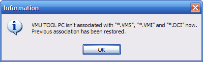

VMU TOOL PC is fully configurable, you can personalize it as you wish. To do that, go to the > .
The following dialog's shown :
1) General
As you see, multiples options are showed. Please note you can leave the mouse cursor into a control to see a hint window.
Here it's a description of all avialables options :
- Prompt before closing application : When you quit VMU TOOL PC, a message is shown, asking you if you are sure to perform this action.
- Show splash screen : Show the VMU TOOL PC at startup.
- Save the directory and rescan at start : This option can be very useful but you must use it carefully because it uses lot of RAM when running the application. At startup, the application scans the previous saved folder and display its contents in the view. It can be very slow (and uses that RAM ^^) if you have many files in this saved folder.
- Shell integration, associate with Dreamcast save files : This option perform a shell integration while associating VMI, VMS and DCI files to VMU TOOL PC.
About the shell integration : If you have already an application associated with VMI, VMS and DCI files, the previous association will be saved to the registry. VMU TOOL PC will be associated by default in Windows. If you want to restore the previous associations, just uncheck the box in option menu. You don't need to reboot your PC to apply changes.
When you want to associate VMU TOOL PC with extensions, a message ask you if you are sure to do this :
Please answer ( on this picture) if you are sure to modify the existing default association :
If you uncheck the check box and click OK, you should have this message :

After pushing , your previous associations are restored.
2) View
- Auto select the first file after scan : This option select the first file in the view after the directory scanning.
- Auto scroll the view when adding a file : With that, VMU TOOL PC'll scroll the view when it add a new file. If you don't activate this option, the view still "freezed" to the top.
- Show errornous VMI files : Add to the view errornous VMI files, with a blue VMU icon. Generally, theses files aren't associated to any VMS files.
- Show invalid VMS files : With this option you can view VMS "alone", without VMI associated. You can create a valid VMI for theses files with the menu item avialable in the view or in the File main menu.
3) Tray icon
- Minimize application put in system tray : When you click on the minimize button on the main window, the application's put in the system tray, at the left of the system clock.
- Close application put in system tray : Same thing but when you close the application (the main window). To quit VMU TOOL PC, select File > Exit or click in the tray icon and select Exit.
- Don't use this option, thanks : The tray icon is desactivated.
4) Debug
- Log scan directories events : Theses events are added to the debug log when a directory scan begins and ending. It can be disturbing, so if you don't like it, disable it here.
- Auto scroll log : Scroll down the debug log automatically, the last line was shown all the time.
- Log state events : Log information events. You can choose the color here.
- Log success events : Log success events, like "file read success" and more. Select your favorite color here too.
- Log errors events : All errors are added to the debug log... default color's red. Note, it exists fatal errors, in red/bold. That kind of errors can't be disabled.
5) Hex Edition
Hex Edit is a cool option for saves files edition. You can use this in the main view, by right-clicking or in the File menu. Select your favorite hex editor. If your hex editor needs extra parameters enter theses in the edit zone on this window.
That's it !